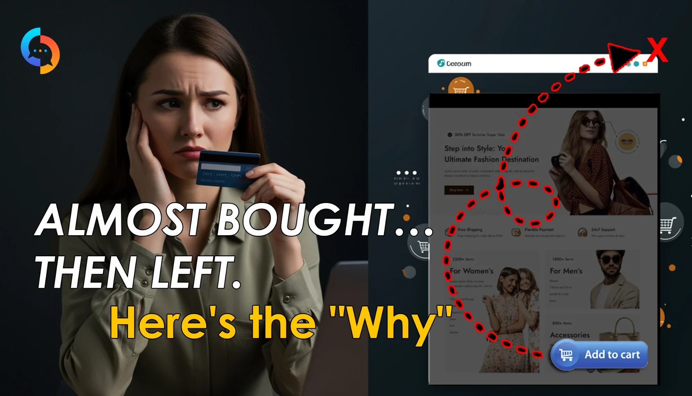

Sell & Tell: пояснили складний SaaS за 2 хвилиниSell & Tell: a complex SaaS explained in 2 minutes
Sell & Tell допомагає інтернет-магазинам дізнатися, чому покупці йдуть, так і не купивши. Ідея абстрактна, тож потрібне було відео, після якого власник магазину одразу розуміє, навіщо йому цей продукт.Sell & Tell helps online stores learn why shoppers leave without buying. The idea is abstract, so they needed a video that makes a store owner instantly see why they need it.

▶Дивитись на YouTubeWatch on YouTube 16:9 · 2:00ЗадачаThe brief
Клієнт мав детальний сценарій на 10 сцен: проблема, сумніви покупця, продукт Sell, аналітика Tell і фінальний заклик. Частину кліпів він згенерував сам, частину треба було знайти в стоках або записати з екрана.The client had a detailed 10-scene script: the problem, shopper doubts, the Sell product, Tell analytics and a final call to action. He generated some clips himself; the rest had to be sourced from stock or screen-recorded.
The most expensive thing in ecommerce isn't traffic. It's traffic you already paid for that leaves without telling you why.
«Найдорожче в e-commerce не трафік. А трафік, за який ви вже заплатили і який іде, не сказавши чому».
Що зробилиWhat we did
- 01Монтаж і ритм.Edit and pacing. Зібрали 10 сцен і фінальний кадр у 2 хвилини так, щоб текст на екрані й голос йшли синхронно, а ключові фрази мали паузу на «приземлення».Cut 10 scenes and a final frame into 2 minutes so on-screen text and voice stay in sync, with pauses that let key lines land.
- 02Моушн-текст і сплітскріни.Motion text and split screens. Анімовані картки сумнівів покупця, «було / стало» на розділеному екрані, перекреслення в сцені про конкурентів.Animated shopper-doubt cards, before/after split screens and strike-throughs in the competitor scene.
- 03Запис екрана і демо.Screen recording and demo. Записали сценарій покупки в інтернет-магазині з курсором і зробили анімацію дашборду Tell зі скрінів демо.Recorded a shopping flow in an online store with the cursor visible, and animated the Tell dashboard from demo screenshots.
- 04Озвучка.Voice-over. Голос Anya в ElevenLabs з інтонаціями за сценарієм.The Anya voice in ElevenLabs, with intonation following the script.
- 05Сток і генерації клієнта.Stock and client clips. Підібрали футажі під кожну сцену і вписали в монтаж кліпи, які згенерував клієнт.Picked footage for each scene and worked the client's own generated clips into the edit.
РезультатResult
Абстрактна ідея «чому покупці йдуть» стала зрозумілою історією на 2 хвилиниThe abstract idea of "why shoppers leave" became a clear 2-minute story
Від проблеми до продукту і заклику «See the live demo». Ролик працює і на сайті, і в презентаціях для клієнтів.From the problem to the product and a "See the live demo" call to action. The video works on the site and in client pitches.
"She got what we wanted faster than I could explain it. No back and forth nonsense, no awkward revisions. Just clean, beautiful work that made us look way better than we are lol. Hire her before she raises her rates."
«Вона зрозуміла, що нам треба, швидше, ніж я встиг пояснити. Жодних зайвих листувань і незручних правок. Просто чиста, красива робота, з якою ми виглядаємо набагато краще, ніж є насправді. Наймайте її, поки вона не підняла ціни».